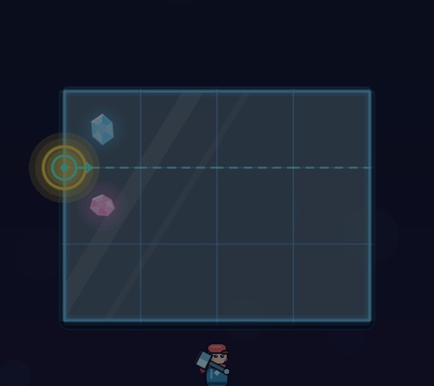

Gioco di logica per iPhone
Shiverglass
Un cristallo per frammento.
Scegli dove colpire, segui le crepe e dividi il vetro finché ogni frammento contiene un solo cristallo.
Come si gioca
Come si gioca
80 rompicapi in otto capitoli.
Guarda il vetro che si spezza
Guarda come un colpo separa due cristalli nel primo schema e come, in un livello successivo, una crepa attraversa una coppia di portali.
Apri il video di gioco

Scegli dove colpire
Cerca una linea che permetta di separare i cristalli.

Dividi il vetro
Segui la crepa e lascia un cristallo in ogni frammento.

Guida una crepa attraverso un portale
I capitoli successivi introducono portali e altri modi per cambiare il percorso di una crepa.